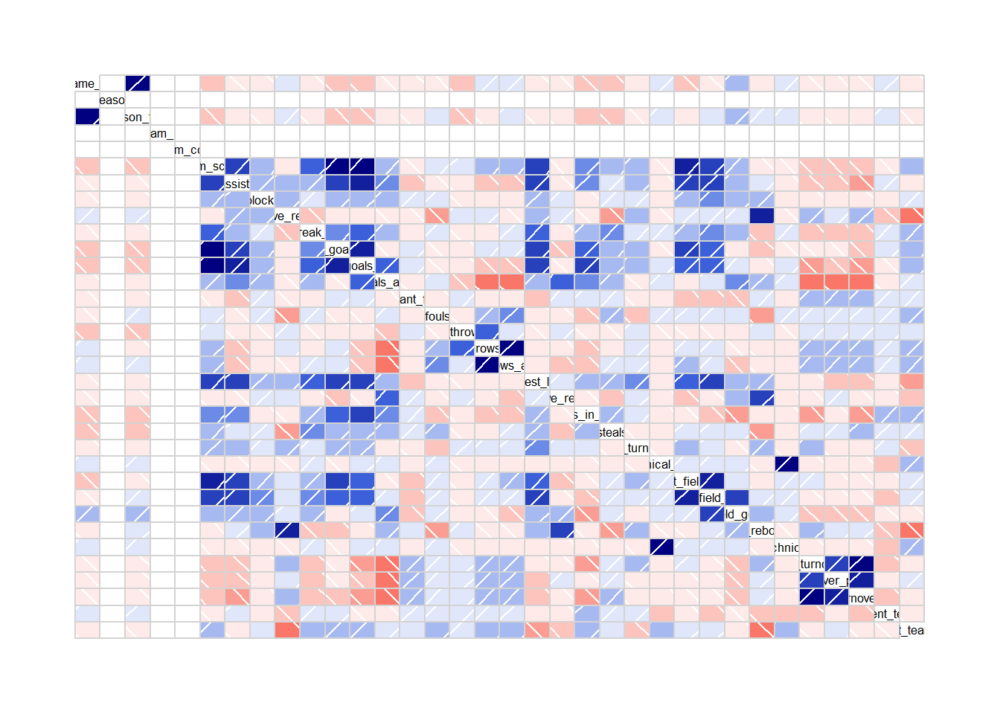
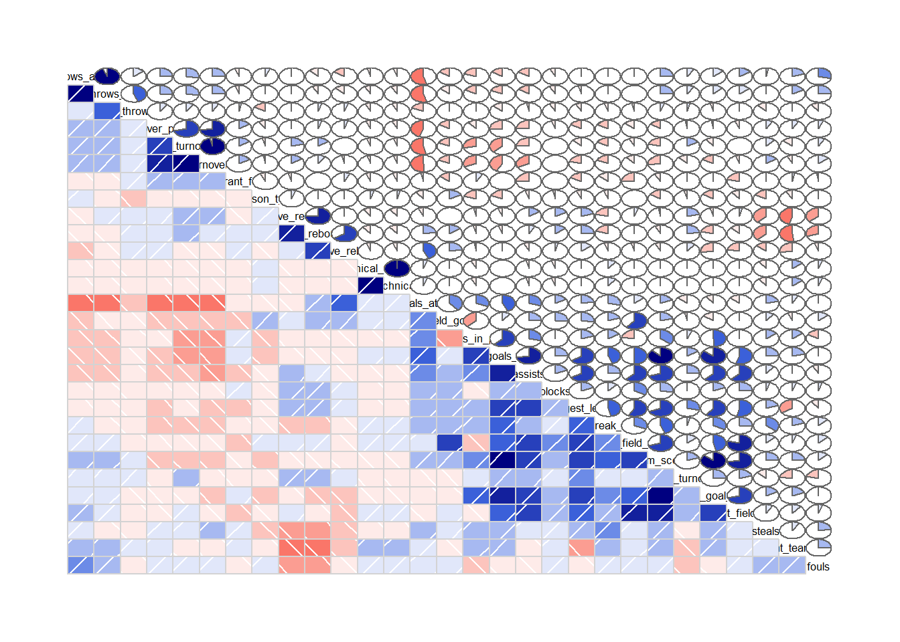

library(corrgram)
library(corrplot)
library(tidyverse)
library(readxl)
library(gtExtras)
nba_team_Celtics_2026 <- read_excel("../../pipeline/nba/data/team_stats/nba_team_Celtics_2026.xlsx")Boston celtics linear regression
Numeric correlation for linear regression
# returns only numeric columns
num.cols <- sapply(nba_team_Celtics_2026,is.numeric)
# filter numerical columns for correlation
cor.data <- cor(nba_team_Celtics_2026[,num.cols])
print(cor.data) game_id season season_type team_id
game_id 1.0000000000 NA 0.970222431 NA
season NA 1 NA NA
season_type 0.9702224309 NA 1.000000000 NA
team_id NA NA NA 1
team_color NA NA NA NA
team_score -0.1864178961 NA -0.159893372 NA
assists -0.0964355224 NA -0.048118858 NA
blocks -0.0674151255 NA -0.033051382 NA
defensive_rebounds 0.0100896447 NA 0.049619655 NA
fast_break_points -0.0352258449 NA -0.056702962 NA
field_goal_pct -0.1852553991 NA -0.163788600 NA
field_goals_made -0.2280789920 NA -0.192676014 NA
field_goals_attempted -0.1320171389 NA -0.100707526 NA
flagrant_fouls -0.0798681801 NA -0.071283244 NA
fouls -0.0008226778 NA 0.022768789 NA
free_throw_pct -0.1800845840 NA -0.163183020 NA
free_throws_made 0.0089489844 NA -0.019414403 NA
free_throws_attempted 0.1004812281 NA 0.058217865 NA
largest_lead -0.0851208046 NA -0.071174135 NA
offensive_rebounds -0.0492126121 NA -0.024290895 NA
points_in_paint -0.2322350082 NA -0.197959170 NA
steals -0.1781841225 NA -0.175087859 NA
team_turnovers -0.0254101333 NA -0.037426194 NA
technical_fouls 0.0442451439 NA 0.038983063 NA
three_point_field_goal_pct -0.1495287797 NA -0.111555786 NA
three_point_field_goals_made -0.0231292784 NA 0.007044747 NA
three_point_field_goals_attempted 0.1737246666 NA 0.169531988 NA
total_rebounds -0.0242308199 NA 0.021603380 NA
total_technical_fouls 0.0442451439 NA 0.038983063 NA
total_turnovers -0.0231667319 NA -0.039763190 NA
turnover_points -0.0495998040 NA -0.087897237 NA
turnovers -0.0162019785 NA -0.029548540 NA
opponent_team_id 0.1180675681 NA 0.140742794 NA
opponent_team_score -0.0657769200 NA -0.088308360 NA
team_color team_score assists
game_id NA -0.18641790 -0.09643552
season NA NA NA
season_type NA -0.15989337 -0.04811886
team_id NA NA NA
team_color 1 NA NA
team_score NA 1.00000000 0.70108937
assists NA 0.70108937 1.00000000
blocks NA 0.27334967 0.19181647
defensive_rebounds NA -0.03094903 0.15797285
fast_break_points NA 0.44398504 0.25151944
field_goal_pct NA 0.86431094 0.62247003
field_goals_made NA 0.87921802 0.71640655
field_goals_attempted NA 0.17984883 0.29356613
flagrant_fouls NA -0.08402473 -0.24204614
fouls NA 0.11639197 -0.08014798
free_throw_pct NA 0.04597254 -0.03288716
free_throws_made NA 0.23286563 -0.15060915
free_throws_attempted NA 0.23409109 -0.16268261
largest_lead NA 0.67995061 0.66330965
offensive_rebounds NA -0.07461569 -0.06918107
points_in_paint NA 0.36241228 0.29763674
steals NA 0.22708631 0.09778759
team_turnovers NA 0.19558921 0.24874919
technical_fouls NA -0.02313465 -0.03856070
three_point_field_goal_pct NA 0.73121940 0.62131140
three_point_field_goals_made NA 0.69550850 0.62071803
three_point_field_goals_attempted NA 0.19982763 0.23141479
total_rebounds NA -0.07151057 0.07404939
total_technical_fouls NA -0.02313465 -0.03856070
total_turnovers NA -0.21146604 -0.24478984
turnover_points NA -0.15172774 -0.22818640
turnovers NA -0.26809024 -0.31661737
opponent_team_id NA -0.03355008 0.03611735
opponent_team_score NA 0.24904971 -0.01278012
blocks defensive_rebounds
game_id -0.067415125 0.010089645
season NA NA
season_type -0.033051382 0.049619655
team_id NA NA
team_color NA NA
team_score 0.273349673 -0.030949035
assists 0.191816474 0.157972854
blocks 1.000000000 0.170844372
defensive_rebounds 0.170844372 1.000000000
fast_break_points 0.117754728 -0.218726546
field_goal_pct 0.180743038 -0.046309661
field_goals_made 0.254361161 -0.063722175
field_goals_attempted 0.161387952 -0.067185117
flagrant_fouls 0.002356010 -0.049431545
fouls 0.038880080 -0.358001152
free_throw_pct -0.075729072 0.017159370
free_throws_made -0.078921385 0.013047133
free_throws_attempted -0.069778787 -0.019254158
largest_lead 0.182960313 0.200948084
offensive_rebounds 0.030429885 0.017165337
points_in_paint -0.018401089 -0.029430965
steals 0.044190840 -0.380735462
team_turnovers 0.019334283 0.208118901
technical_fouls -0.050597201 -0.097031838
three_point_field_goal_pct 0.253546197 0.031043521
three_point_field_goals_made 0.335674427 0.051354380
three_point_field_goals_attempted 0.259394115 0.001063237
total_rebounds 0.148127828 0.762976521
total_technical_fouls -0.050597201 -0.097031838
total_turnovers -0.002051709 0.202369415
turnover_points -0.047948334 0.020513584
turnovers -0.007503301 0.145423004
opponent_team_id -0.109947866 -0.192467885
opponent_team_score 0.050483259 -0.455623060
fast_break_points field_goal_pct
game_id -0.03522584 -0.185255399
season NA NA
season_type -0.05670296 -0.163788600
team_id NA NA
team_color NA NA
team_score 0.44398504 0.864310936
assists 0.25151944 0.622470025
blocks 0.11775473 0.180743038
defensive_rebounds -0.21872655 -0.046309661
fast_break_points 1.00000000 0.327950568
field_goal_pct 0.32795057 1.000000000
field_goals_made 0.44419429 0.848997843
field_goals_attempted 0.28088560 -0.102698120
flagrant_fouls -0.13462575 0.020999392
fouls 0.11958289 -0.014175769
free_throw_pct -0.04600772 -0.044691875
free_throws_made -0.01363754 0.115200287
free_throws_attempted 0.01398023 0.137321279
largest_lead 0.45844426 0.597220711
offensive_rebounds -0.05019572 -0.272941129
points_in_paint 0.16813542 0.495016155
steals 0.35871928 0.170083752
team_turnovers 0.03280600 0.240760458
technical_fouls 0.10005292 -0.008696561
three_point_field_goal_pct 0.26197745 0.706921281
three_point_field_goals_made 0.31356460 0.470515986
three_point_field_goals_attempted 0.18566448 -0.140790303
total_rebounds -0.19690845 -0.211281545
total_technical_fouls 0.10005292 -0.008696561
total_turnovers -0.16991016 -0.101812629
turnover_points -0.16371161 -0.027723353
turnovers -0.18044740 -0.170288448
opponent_team_id 0.01989561 0.038768066
opponent_team_score 0.20149101 0.193219998
field_goals_made field_goals_attempted
game_id -0.228078992 -0.13201714
season NA NA
season_type -0.192676014 -0.10070753
team_id NA NA
team_color NA NA
team_score 0.879218025 0.17984883
assists 0.716406553 0.29356613
blocks 0.254361161 0.16138795
defensive_rebounds -0.063722175 -0.06718512
fast_break_points 0.444194291 0.28088560
field_goal_pct 0.848997843 -0.10269812
field_goals_made 1.000000000 0.43152242
field_goals_attempted 0.431522419 1.00000000
flagrant_fouls 0.007351402 -0.03221124
fouls -0.012893188 0.01219077
free_throw_pct -0.140937069 -0.18005141
free_throws_made -0.184833107 -0.54347319
free_throws_attempted -0.160933015 -0.53834103
largest_lead 0.654080777 0.21656667
offensive_rebounds -0.015186243 0.43544290
points_in_paint 0.617663523 0.31230029
steals 0.247431729 0.20356295
team_turnovers 0.152560314 -0.12934269
technical_fouls 0.004089988 0.05311251
three_point_field_goal_pct 0.552091902 -0.13992635
three_point_field_goals_made 0.497923074 0.13777272
three_point_field_goals_attempted 0.092403179 0.39720539
total_rebounds -0.057729582 0.23100811
total_technical_fouls 0.004089988 0.05311251
total_turnovers -0.368480983 -0.53665772
turnover_points -0.263630003 -0.44843828
turnovers -0.414222134 -0.50444404
opponent_team_id -0.009785556 -0.08517704
opponent_team_score 0.211667082 0.07293031
flagrant_fouls fouls free_throw_pct
game_id -0.079868180 -0.0008226778 -0.180084584
season NA NA NA
season_type -0.071283244 0.0227687889 -0.163183020
team_id NA NA NA
team_color NA NA NA
team_score -0.084024727 0.1163919739 0.045972537
assists -0.242046135 -0.0801479759 -0.032887163
blocks 0.002356010 0.0388800800 -0.075729072
defensive_rebounds -0.049431545 -0.3580011524 0.017159370
fast_break_points -0.134625749 0.1195828924 -0.046007722
field_goal_pct 0.020999392 -0.0141757691 -0.044691875
field_goals_made 0.007351402 -0.0128931884 -0.140937069
field_goals_attempted -0.032211240 0.0121907665 -0.180051406
flagrant_fouls 1.000000000 -0.0260072446 0.028669754
fouls -0.026007245 1.0000000000 -0.102572942
free_throw_pct 0.028669754 -0.1025729422 1.000000000
free_throws_made -0.049003406 0.2361467396 0.445241901
free_throws_attempted -0.057511039 0.2881634344 0.139132686
largest_lead -0.174782264 -0.1030956756 -0.080470512
offensive_rebounds 0.069538398 -0.0570924867 0.048273493
points_in_paint 0.079533927 -0.1746456954 -0.010616440
steals 0.018607784 0.2309266429 -0.118846491
team_turnovers -0.008390969 -0.2128779215 0.036963170
technical_fouls -0.060156311 0.0480968535 -0.070858582
three_point_field_goal_pct -0.218781164 0.0492839154 -0.015971637
three_point_field_goals_made -0.240692853 0.1240994134 -0.035982172
three_point_field_goals_attempted -0.148426929 0.1331899460 -0.008860436
total_rebounds 0.007791537 -0.3060849809 0.044111614
total_technical_fouls -0.060156311 0.0480968535 -0.070858582
total_turnovers 0.156008899 0.0754595879 0.088683696
turnover_points 0.149507317 0.0551875443 0.095989742
turnovers 0.159574481 0.1358925859 0.078977553
opponent_team_id 0.014741547 0.0875014250 0.120666798
opponent_team_score 0.025848280 0.2473366696 0.015445789
free_throws_made free_throws_attempted
game_id 8.948984e-03 0.100481228
season NA NA
season_type -1.941440e-02 0.058217865
team_id NA NA
team_color NA NA
team_score 2.328656e-01 0.234091092
assists -1.506091e-01 -0.162682608
blocks -7.892139e-02 -0.069778787
defensive_rebounds 1.304713e-02 -0.019254158
fast_break_points -1.363754e-02 0.013980229
field_goal_pct 1.152003e-01 0.137321279
field_goals_made -1.848331e-01 -0.160933015
field_goals_attempted -5.434732e-01 -0.538341031
flagrant_fouls -4.900341e-02 -0.057511039
fouls 2.361467e-01 0.288163434
free_throw_pct 4.452419e-01 0.139132686
free_throws_made 1.000000e+00 0.942353085
free_throws_attempted 9.423531e-01 1.000000000
largest_lead -4.337811e-02 -0.024401828
offensive_rebounds -1.286489e-01 -0.157671289
points_in_paint -1.744404e-01 -0.201146965
steals -1.854404e-02 0.025089711
team_turnovers 9.016662e-02 0.088641109
technical_fouls -8.818768e-02 -0.047121894
three_point_field_goal_pct 1.366076e-01 0.155951589
three_point_field_goals_made 8.633327e-05 0.013673334
three_point_field_goals_attempted -1.408509e-01 -0.149936601
total_rebounds -7.336442e-02 -0.116414663
total_technical_fouls -8.818768e-02 -0.047121894
total_turnovers 2.767445e-01 0.270119927
turnover_points 2.620551e-01 0.244568987
turnovers 2.535348e-01 0.247287977
opponent_team_id 5.169389e-02 0.007665415
opponent_team_score 1.719058e-01 0.199645394
largest_lead offensive_rebounds
game_id -0.08512080 -0.049212612
season NA NA
season_type -0.07117414 -0.024290895
team_id NA NA
team_color NA NA
team_score 0.67995061 -0.074615691
assists 0.66330965 -0.069181072
blocks 0.18296031 0.030429885
defensive_rebounds 0.20094808 0.017165337
fast_break_points 0.45844426 -0.050195720
field_goal_pct 0.59722071 -0.272941129
field_goals_made 0.65408078 -0.015186243
field_goals_attempted 0.21656667 0.435442896
flagrant_fouls -0.17478226 0.069538398
fouls -0.10309568 -0.057092487
free_throw_pct -0.08047051 0.048273493
free_throws_made -0.04337811 -0.128648917
free_throws_attempted -0.02440183 -0.157671289
largest_lead 1.00000000 0.140953995
offensive_rebounds 0.14095399 1.000000000
points_in_paint 0.20869688 -0.025323902
steals 0.19429921 -0.142902172
team_turnovers 0.29033235 0.102657850
technical_fouls -0.02273790 -0.059603783
three_point_field_goal_pct 0.53363494 -0.228768008
three_point_field_goals_made 0.58016127 -0.045271473
three_point_field_goals_attempted 0.27280865 0.226204511
total_rebounds 0.24221838 0.659427705
total_technical_fouls -0.02273790 -0.059603783
total_turnovers -0.12261422 -0.004105352
turnover_points -0.16124108 0.041292682
turnovers -0.20518777 -0.032998776
opponent_team_id -0.07832438 -0.091358189
opponent_team_score -0.33799791 -0.273708163
points_in_paint steals team_turnovers
game_id -0.23223501 -0.17818412 -0.025410133
season NA NA NA
season_type -0.19795917 -0.17508786 -0.037426194
team_id NA NA NA
team_color NA NA NA
team_score 0.36241228 0.22708631 0.195589213
assists 0.29763674 0.09778759 0.248749187
blocks -0.01840109 0.04419084 0.019334283
defensive_rebounds -0.02943096 -0.38073546 0.208118901
fast_break_points 0.16813542 0.35871928 0.032805999
field_goal_pct 0.49501615 0.17008375 0.240760458
field_goals_made 0.61766352 0.24743173 0.152560314
field_goals_attempted 0.31230029 0.20356295 -0.129342692
flagrant_fouls 0.07953393 0.01860778 -0.008390969
fouls -0.17464570 0.23092664 -0.212877921
free_throw_pct -0.01061644 -0.11884649 0.036963170
free_throws_made -0.17444044 -0.01854404 0.090166615
free_throws_attempted -0.20114696 0.02508971 0.088641109
largest_lead 0.20869688 0.19429921 0.290332349
offensive_rebounds -0.02532390 -0.14290217 0.102657850
points_in_paint 1.00000000 0.15138745 0.067578054
steals 0.15138745 1.00000000 -0.126471249
team_turnovers 0.06757805 -0.12647125 1.000000000
technical_fouls -0.06900651 -0.09260289 -0.015831416
three_point_field_goal_pct -0.00948089 0.07886485 0.201330810
three_point_field_goals_made -0.22513268 0.12042230 0.131176701
three_point_field_goals_attempted -0.37463812 0.10128024 -0.031143395
total_rebounds -0.03850096 -0.37865623 0.222850684
total_technical_fouls -0.06900651 -0.09260289 -0.015831416
total_turnovers -0.28733805 0.11107865 0.166895380
turnover_points -0.10858331 0.08220945 -0.025621453
turnovers -0.30855939 0.14749436 -0.112958268
opponent_team_id 0.19261436 0.01380386 0.099971346
opponent_team_score 0.15108930 0.09141520 -0.227763024
technical_fouls three_point_field_goal_pct
game_id 0.044245144 -0.149528780
season NA NA
season_type 0.038983063 -0.111555786
team_id NA NA
team_color NA NA
team_score -0.023134654 0.731219403
assists -0.038560699 0.621311396
blocks -0.050597201 0.253546197
defensive_rebounds -0.097031838 0.031043521
fast_break_points 0.100052922 0.261977445
field_goal_pct -0.008696561 0.706921281
field_goals_made 0.004089988 0.552091902
field_goals_attempted 0.053112515 -0.139926350
flagrant_fouls -0.060156311 -0.218781164
fouls 0.048096853 0.049283915
free_throw_pct -0.070858582 -0.015971637
free_throws_made -0.088187683 0.136607634
free_throws_attempted -0.047121894 0.155951589
largest_lead -0.022737898 0.533634938
offensive_rebounds -0.059603783 -0.228768008
points_in_paint -0.069006505 -0.009480890
steals -0.092602892 0.078864846
team_turnovers -0.015831416 0.201330810
technical_fouls 1.000000000 0.014593601
three_point_field_goal_pct 0.014593601 1.000000000
three_point_field_goals_made 0.024306333 0.798045254
three_point_field_goals_attempted 0.016834254 0.024205117
total_rebounds -0.111491303 -0.124562461
total_technical_fouls 1.000000000 0.014593601
total_turnovers -0.053577166 0.004719681
turnover_points -0.063273588 -0.066429755
turnovers -0.049540597 -0.051846838
opponent_team_id -0.200166488 -0.087045876
opponent_team_score 0.143188438 0.109313814
three_point_field_goals_made
game_id -2.312928e-02
season NA
season_type 7.044747e-03
team_id NA
team_color NA
team_score 6.955085e-01
assists 6.207180e-01
blocks 3.356744e-01
defensive_rebounds 5.135438e-02
fast_break_points 3.135646e-01
field_goal_pct 4.705160e-01
field_goals_made 4.979231e-01
field_goals_attempted 1.377727e-01
flagrant_fouls -2.406929e-01
fouls 1.240994e-01
free_throw_pct -3.598217e-02
free_throws_made 8.633327e-05
free_throws_attempted 1.367333e-02
largest_lead 5.801613e-01
offensive_rebounds -4.527147e-02
points_in_paint -2.251327e-01
steals 1.204223e-01
team_turnovers 1.311767e-01
technical_fouls 2.430633e-02
three_point_field_goal_pct 7.980453e-01
three_point_field_goals_made 1.000000e+00
three_point_field_goals_attempted 6.059949e-01
total_rebounds 9.343289e-03
total_technical_fouls 2.430633e-02
total_turnovers -7.201771e-02
turnover_points -1.354715e-01
turnovers -1.094543e-01
opponent_team_id -1.533807e-01
opponent_team_score 4.633847e-02
three_point_field_goals_attempted
game_id 0.173724667
season NA
season_type 0.169531988
team_id NA
team_color NA
team_score 0.199827632
assists 0.231414791
blocks 0.259394115
defensive_rebounds 0.001063237
fast_break_points 0.185664484
field_goal_pct -0.140790303
field_goals_made 0.092403179
field_goals_attempted 0.397205386
flagrant_fouls -0.148426929
fouls 0.133189946
free_throw_pct -0.008860436
free_throws_made -0.140850872
free_throws_attempted -0.149936601
largest_lead 0.272808649
offensive_rebounds 0.226204511
points_in_paint -0.374638121
steals 0.101280244
team_turnovers -0.031143395
technical_fouls 0.016834254
three_point_field_goal_pct 0.024205117
three_point_field_goals_made 0.605994851
three_point_field_goals_attempted 1.000000000
total_rebounds 0.147045494
total_technical_fouls 0.016834254
total_turnovers -0.178437783
turnover_points -0.159654605
turnovers -0.171061958
opponent_team_id -0.100612654
opponent_team_score -0.064317374
total_rebounds total_technical_fouls
game_id -0.024230820 0.044245144
season NA NA
season_type 0.021603380 0.038983063
team_id NA NA
team_color NA NA
team_score -0.071510567 -0.023134654
assists 0.074049386 -0.038560699
blocks 0.148127828 -0.050597201
defensive_rebounds 0.762976521 -0.097031838
fast_break_points -0.196908454 0.100052922
field_goal_pct -0.211281545 -0.008696561
field_goals_made -0.057729582 0.004089988
field_goals_attempted 0.231008111 0.053112515
flagrant_fouls 0.007791537 -0.060156311
fouls -0.306084981 0.048096853
free_throw_pct 0.044111614 -0.070858582
free_throws_made -0.073364422 -0.088187683
free_throws_attempted -0.116414663 -0.047121894
largest_lead 0.242218378 -0.022737898
offensive_rebounds 0.659427705 -0.059603783
points_in_paint -0.038500963 -0.069006505
steals -0.378656228 -0.092602892
team_turnovers 0.222850684 -0.015831416
technical_fouls -0.111491303 1.000000000
three_point_field_goal_pct -0.124562461 0.014593601
three_point_field_goals_made 0.009343289 0.024306333
three_point_field_goals_attempted 0.147045494 0.016834254
total_rebounds 1.000000000 -0.111491303
total_technical_fouls -0.111491303 1.000000000
total_turnovers 0.149503067 -0.053577166
turnover_points 0.042120332 -0.063273588
turnovers 0.088006052 -0.049540597
opponent_team_id -0.203777544 -0.200166488
opponent_team_score -0.519531501 0.143188438
total_turnovers turnover_points turnovers
game_id -0.023166732 -0.04959980 -0.016201979
season NA NA NA
season_type -0.039763190 -0.08789724 -0.029548540
team_id NA NA NA
team_color NA NA NA
team_score -0.211466043 -0.15172774 -0.268090236
assists -0.244789838 -0.22818640 -0.316617370
blocks -0.002051709 -0.04794833 -0.007503301
defensive_rebounds 0.202369415 0.02051358 0.145423004
fast_break_points -0.169910158 -0.16371161 -0.180447395
field_goal_pct -0.101812629 -0.02772335 -0.170288448
field_goals_made -0.368480983 -0.26363000 -0.414222134
field_goals_attempted -0.536657721 -0.44843828 -0.504444045
flagrant_fouls 0.156008899 0.14950732 0.159574481
fouls 0.075459588 0.05518754 0.135892586
free_throw_pct 0.088683696 0.09598974 0.078977553
free_throws_made 0.276744456 0.26205512 0.253534849
free_throws_attempted 0.270119927 0.24456899 0.247287977
largest_lead -0.122614221 -0.16124108 -0.205187768
offensive_rebounds -0.004105352 0.04129268 -0.032998776
points_in_paint -0.287338052 -0.10858331 -0.308559394
steals 0.111078650 0.08220945 0.147494363
team_turnovers 0.166895380 -0.02562145 -0.112958268
technical_fouls -0.053577166 -0.06327359 -0.049540597
three_point_field_goal_pct 0.004719681 -0.06642975 -0.051846838
three_point_field_goals_made -0.072017712 -0.13547154 -0.109454256
three_point_field_goals_attempted -0.178437783 -0.15965460 -0.171061958
total_rebounds 0.149503067 0.04212033 0.088006052
total_technical_fouls -0.053577166 -0.06327359 -0.049540597
total_turnovers 1.000000000 0.71357342 0.960811897
turnover_points 0.713573419 1.00000000 0.726295229
turnovers 0.960811897 0.72629523 1.000000000
opponent_team_id -0.154147792 -0.02733135 -0.183446286
opponent_team_score -0.138050897 0.07405145 -0.075084239
opponent_team_id opponent_team_score
game_id 0.118067568 -0.06577692
season NA NA
season_type 0.140742794 -0.08830836
team_id NA NA
team_color NA NA
team_score -0.033550078 0.24904971
assists 0.036117349 -0.01278012
blocks -0.109947866 0.05048326
defensive_rebounds -0.192467885 -0.45562306
fast_break_points 0.019895613 0.20149101
field_goal_pct 0.038768066 0.19322000
field_goals_made -0.009785556 0.21166708
field_goals_attempted -0.085177043 0.07293031
flagrant_fouls 0.014741547 0.02584828
fouls 0.087501425 0.24733667
free_throw_pct 0.120666798 0.01544579
free_throws_made 0.051693894 0.17190580
free_throws_attempted 0.007665415 0.19964539
largest_lead -0.078324384 -0.33799791
offensive_rebounds -0.091358189 -0.27370816
points_in_paint 0.192614358 0.15108930
steals 0.013803862 0.09141520
team_turnovers 0.099971346 -0.22776302
technical_fouls -0.200166488 0.14318844
three_point_field_goal_pct -0.087045876 0.10931381
three_point_field_goals_made -0.153380740 0.04633847
three_point_field_goals_attempted -0.100612654 -0.06431737
total_rebounds -0.203777544 -0.51953150
total_technical_fouls -0.200166488 0.14318844
total_turnovers -0.154147792 -0.13805090
turnover_points -0.027331348 0.07405145
turnovers -0.183446286 -0.07508424
opponent_team_id 1.000000000 -0.04241615
opponent_team_score -0.042416154 1.00000000library(corrplot)
numeric_cols <- c("team_score", "assists", "blocks", "defensive_rebounds",
"fast_break_points", "field_goal_pct", "field_goals_made",
"field_goals_attempted", "free_throw_pct", "free_throws_made",
"free_throws_attempted", "largest_lead", "offensive_rebounds",
"points_in_paint", "steals", "team_turnovers", "three_point_field_goal_pct",
"three_point_field_goals_made", "three_point_field_goals_attempted",
"total_rebounds", "turnovers", "opponent_team_score")
cor.data <- cor(nba_team_Celtics_2026[, numeric_cols], use = "complete.obs")
# clear any stale/ghosted plot first
while (dev.cur() > 1) dev.off()
corrplot(cor.data, method = "color",
type = "upper", # drop the redundant mirrored half
tl.col = "black",
tl.cex = 0.7, # shrink label text so long names fit
tl.srt = 45, # angle labels instead of vertical stacking
mar = c(0, 0, 1, 0))Interpretation
How would I interpret this plot
Reading a corrplot(method="color") heatmap:
The basics
Each cell = correlation between the row variable and column variable, ranging -1 to +1.
Blue = positive (as one goes up, the other tends to go up). Red/brown = negative (as one goes up, the other tends to go down).
Darker/more saturated = stronger relationship. Pale/near-white ≈ no linear relationship.
The diagonal is always dark blue (=1) — a variable perfectly correlates with itself. Ignore it.
With
type="upper"you only see half the matrix (it’s symmetric, so the lower half is redundant).
Applying it to your basketball data (using the correlations from your earlier cor() output):
team_scorevsfield_goals_made= 0.88 → strong dark blue. Unsurprising: making more shots wins you more points.team_scorevsthree_point_field_goal_pct= 0.73, vsassists= 0.70 → also strong blue. Efficient/team-oriented offense tracks with scoring.defensive_reboundsvstotal_rebounds= 0.76 → strong blue, but this is partly definitional (total rebounds includes defensive rebounds).free_throws_madevsfree_throws_attempted= 0.94 → near-perfect blue. This pair (and similar “made” vs “attempted” pairs) is tautological, not insightful — ignore these, they’re just measuring the same underlying event twice.defensive_reboundsvsopponent_team_score= -0.46 → moderate red/negative. Makes basketball sense: out-rebounding opponents on defense limits their second-chance points.stealsvsdefensive_rebounds= -0.38 → red. Worth investigating but could just reflect play style differences between teams.
What to actually look for
Scan for the darkest cells (blue or red) excluding the diagonal and the obvious made/attempted pairs — those are your real signal.
Look at the row/column for
team_score(or whatever your target variable is) specifically — that tells you what predicts winning/scoring.Treat anything pale as noise, not “no effect” — correlation only captures linear relationships.
Remember correlation ≠ causation — e.g. high assists correlating with score doesn’t mean forcing more assists causes more points; both could stem from good shot-making.
If you dropped the ID columns (game_id, team_id, etc.) like I suggested, you shouldn’t see any blank/white NA cells anymore — if you still do, those are variables with zero variance or all-NA in your filtered data.
# corrgram
corrgram(nba_team_Celtics_2026)
num.cols <- c("team_score", "assists", "blocks", "defensive_rebounds",
"fast_break_points", "field_goal_pct", "field_goals_made",
"field_goals_attempted", "flagrant_fouls", "fouls", "free_throw_pct",
"free_throws_made", "free_throws_attempted", "largest_lead",
"offensive_rebounds", "points_in_paint", "steals", "team_turnovers",
"technical_fouls", "three_point_field_goal_pct",
"three_point_field_goals_made", "three_point_field_goals_attempted",
"total_rebounds", "total_technical_fouls", "total_turnovers",
"turnover_points", "turnovers", "opponent_team_score")
cor.data <- cor(nba_team_Celtics_2026[, num.cols], use = "complete.obs")
library(corrplot)
while (dev.cur() > 1) dev.off()
corrplot(cor.data, method = "color", type = "upper",
tl.col = "black", tl.cex = 0.7, tl.srt = 45, mar = c(0,0,1,0))Interpretation
Here’s how to read that matrix, using the Celtics data you pasted as the working example.
Structure of the table
Every row and column is a variable; each cell is the Pearson correlation between that row/column pair, from -1 to +1.
It’s symmetric — the cell at
(team_score, assists)equals the cell at(assists, team_score)— so you only need to scan half of it.The diagonal is always
1.0(a variable perfectly correlates with itself) — skip it.0= no linear relationship.+1/-1= perfect positive/negative relationship. Anything below ~0.3 in magnitude is usually too weak to act on.
What predicts team_score (row 6) — the strongest signals:
| Variable | r | Read |
|---|---|---|
field_goals_made |
0.879 | Strongest driver — obviously, makes = points |
field_goal_pct |
0.864 | Shooting efficiency tracks scoring closely |
three_point_field_goal_pct |
0.731 | 3pt shooting efficiency matters a lot |
assists |
0.701 | Ball movement → scoring |
three_point_field_goals_made |
0.696 | |
largest_lead |
0.680 | Games they score more in, they tend to blow out (or vice versa) |
fast_break_points |
0.444 | Moderate — transition offense helps but isn’t dominant |
points_in_paint |
0.362 | Moderate |
Near-zero — don’t bother interpreting these:
free_throw_pct (0.046), offensive_rebounds (-0.075), total_rebounds (-0.072) — essentially no linear relationship with scoring in this data.
Negative and worth a second look:
turnoversvsteam_score= -0.268 — sensible, fewer giveaways, more points.defensive_reboundsvsopponent_team_score= -0.456,total_reboundsvsopponent_team_score= -0.520 — boxing out limits opponent scoring, as expected.stealsvsdefensive_rebounds= -0.381 — teams/games with more steals tend to have fewer defensive boards, possibly a style-of-play tradeoff (gambling for steals vs. staying home to box out).
Ignore these — they’re tautological, not insight:
free_throws_madevsfree_throws_attempted= 0.942three_point_field_goal_pctvsthree_point_field_goals_made= 0.798defensive_reboundsvstotal_rebounds= 0.763Any “made” vs “attempted” or “X_pct” vs “X_made” pair — these are mathematically related by definition, so a high correlation tells you nothing new.
Caveats to keep in mind:
This is one team’s games in one season — sample size is likely ~2 dozen to ~82 rows, so treat weaker correlations (anything under ~0.3–0.4) as noise, not real effects.
Correlation ≠ causation — e.g.,
assistscorrelating withteam_scoredoesn’t prove passing causes scoring; both likely stem from playing well overall.Watch for the “made/attempted/pct” family of variables — they’re not independent and can crowd out more meaningful patterns visually if left in the matrix.
If your goal is to find what actually drives wins/scoring, focus on the non-tautological variables with |r| > 0.4 relative to team_score and opponent_team_score — that’s field_goals_made, field_goal_pct, three_point_field_goal_pct, assists, largest_lead, defensive_rebounds/total_rebounds (via opponent scoring), and turnovers.
library(corrgram)
# keep only numeric columns with actual variance
has_variance <- sapply(nba_team_Celtics_2026, function(col) {
is.numeric(col) && sd(col, na.rm = TRUE) > 0
})
celtics_num <- nba_team_Celtics_2026[, has_variance]
# optional: also drop ID columns that technically vary but aren't real stats
celtics_num <- celtics_num[, !names(celtics_num) %in% c("game_id", "opponent_team_id")]
# confirm no NAs remain
sum(is.na(celtics_num)) # should print 0[1] 0corrgram(celtics_num, order = TRUE,
lower.panel = panel.shade,
upper.panel = panel.pie,
text.panel = panel.txt)
png("celtics_corrgram.png", width = 1800, height = 1800, res = 180)
corrgram(celtics_num, order = TRUE,
lower.panel = panel.shade,
upper.panel = panel.pie,
text.panel = panel.txt)
dev.off()png
2 Linear Regression Model
Using the non-tautological variables the correlation matrix flagged as meaningfully related to team_score (|r| > 0.4): field_goals_made, field_goal_pct, three_point_field_goal_pct, assists, and turnovers.
model <- lm(team_score ~ field_goals_made + field_goal_pct + three_point_field_goal_pct +
assists + turnovers, data = nba_team_Celtics_2026)
summary(model)
Call:
lm(formula = team_score ~ field_goals_made + field_goal_pct +
three_point_field_goal_pct + assists + turnovers, data = nba_team_Celtics_2026)
Residuals:
Min 1Q Median 3Q Max
-11.0853 -3.5282 -0.3141 3.8318 11.5265
Coefficients:
Estimate Std. Error t value Pr(>|t|)
(Intercept) 14.79135 5.95440 2.484 0.0150 *
field_goals_made 1.45641 0.24893 5.851 9.40e-08 ***
field_goal_pct 0.39105 0.23492 1.665 0.0998 .
three_point_field_goal_pct 0.51914 0.11378 4.563 1.73e-05 ***
assists 0.01935 0.17185 0.113 0.9106
turnovers 0.08027 0.20503 0.392 0.6964
---
Signif. codes: 0 '***' 0.001 '**' 0.01 '*' 0.05 '.' 0.1 ' ' 1
Residual standard error: 5.287 on 83 degrees of freedom
Multiple R-squared: 0.8659, Adjusted R-squared: 0.8578
F-statistic: 107.2 on 5 and 83 DF, p-value: < 2.2e-16Interpretation
field_goals_made is by far the strongest, most significant predictor of team_score — unsurprising given its 0.88 correlation with scoring found earlier. The other four variables (field_goal_pct, three_point_field_goal_pct, assists, turnovers) overlap heavily with field_goals_made (a team that makes a lot of shots is also shooting efficiently), so once field_goals_made is in the model, their individual contributions are harder to pin down — a reminder that the strong pairwise correlations seen in the heatmap don’t all act independently once combined into a single model.